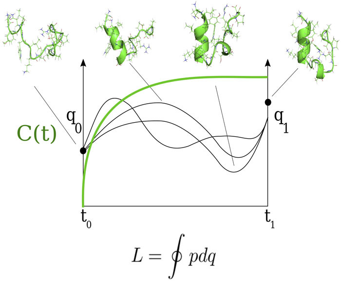
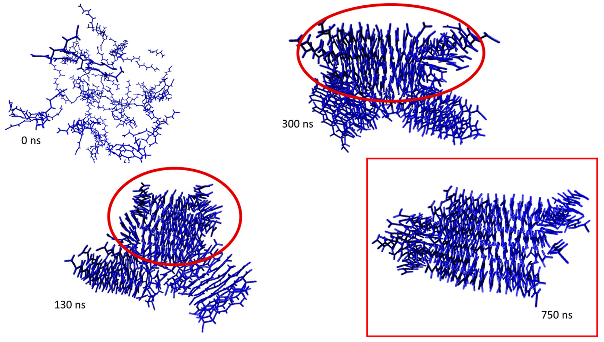
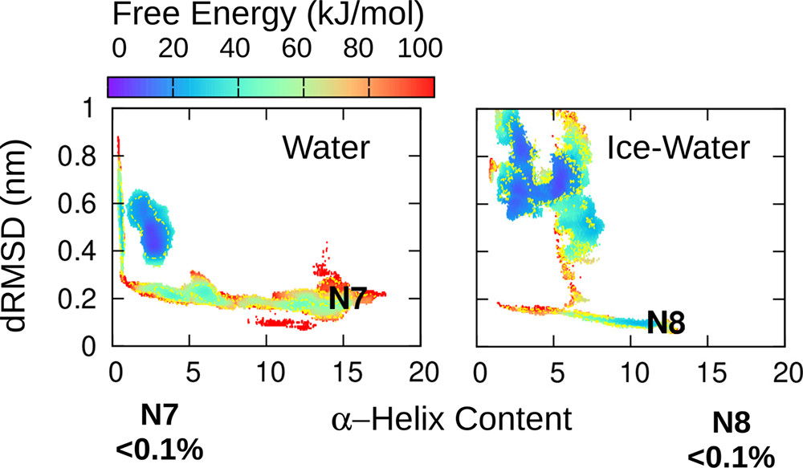

Molecular Dynamics First Principles Simulation of Chemical Systems
Solving the Newtonian equations of motion for biochemical molecules provides atomistic levels of visualizable insight of difficult-to-probe systems.

Peptide Aggregation Investigating the Molecular Origins of Disease
The formation of abnormal plaques from natural cellular proteins is clinically associated with disease. Our methods let us investigate this phenomena in detail.

Analysis of Biomolecules Statistical Mechanics & Machine Learning
With approaches ranging from traditional statistical mechanics to novel machine learning algorithms, we quantitatively characterize the properties of simulated biopolymers.
